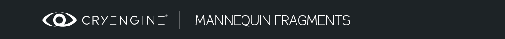

Обзор
Разделы
Фрагменты являются основным строительным блоком интерактивной анимации в CryMannequin. Вы воспроизводите анимацию, заключая ее во фрагмент, а затем вместо этого воспроизводите этот фрагмент. Более конкретно, фрагменты — это многоуровневые последовательности анимационных клипов и Процедурные клипы. Это означает, что вы можете разместить несколько анимационных клипов в последовательности или наложить их друг на друга и рассматривать их как один. Фрагменты называются FragmentID и Теги. Несколько фрагментов могут иметь одинаковые fragmentID и теги, тогда мы говорим, что их несколько. варианты.
Фрагменты играют дальше Области применения. (одновременно на прицеле может воспроизводиться только один фрагмент)
При переходе от одного фрагмента к другому Переходы используются.
Создание и редактирование фрагментов
Фрагменты создаются в Mannequin Браузер фрагментов и отредактировано в Mannequin Редактор фрагментов.
Хранение
Фрагменты хранятся в Файл базы данных анимации (ADB).
В какой файл ADB попадает редактируемый вами фрагмент, определяется следующим образом:
- Сначала система просматривает объем вы редактируете фрагмент. (например, FullBody).
- Эта область применения имеет определенную контекст области действия. Это определено в определение контроллера (например, область FullBody может работать в контексте области MainCharacter).
- Затем система проверяет, какой файл ADB назначен этому контексту области в текущем контексте. настройка предварительного просмотра, который редактируется в редактор контекста (например, контексту области MainCharacter присвоен MainCharacterAnims.adb).
- Фрагмент окажется в этом файле ADB. Для этого файла ADB возможно иметь дополнительные правила, которые перемещают фрагмент в другой файл ADB, под-ADB. Это отредактировано в редактор анимации DB (например, может существовать правило, которое перемещает фрагменты для «хита» FragmentID в суб-adb MainCharacterHitAnims.adb).
Фрагмент ID Описание
А FragmentID — основная метка, под которой хранится фрагмент.
FragmentID представляет состояние анимации, такое как «Движение», «Холостой ход», «Перезагрузка», «Выстрел» и т. д. Игра запрашивает фрагменты, указав этот FragmentID. Вопреки тому, что можно предположить по названию «FragmentID», обычно существует множество фрагментов, подпадающих под один и тот же FragmentID. Например, у вас может быть много разных фрагментов «Движение»: они представляют собой либо случайные вариации, либо вариации, зависящие от контекста (движение приседая, перемещение стоя и т. д.).
Обычно программист определяет FragmentID для каждого базового состояния анимации, а затем аниматоры могут создавать фрагменты для этих FragmentIDs.
FragmentID или Переход?
Хорошее практическое правило для определения того, каким должен быть FragmentID: сократите количество состояний до минимума, логически необходимого для управления потоком работы системы. Это весь код, необходимый для управления, и его можно использовать в качестве ключа FragmentIDs.
Например, вот как может выглядеть функция создания оружия:

Если нам нужна анимация между FragmentIDs лучше всего обращаться с ними как Переходы. Это уменьшает объем кода и упрощает модификацию системы исключительно с помощью данных:

Серая зона — это этап настройки. При замене детали необходимо последовательно удалять определенную старую деталь и вставлять новую (слева на рисунке).
Или мы могли бы просто запросить альтернативную настройку позиции (изменить тег, определяющий позицию, и запросить новый фрагмент), а затем позволить системе перехода обрабатывать удаление старой части и применять новую часть. Это также позволит аниматорам использовать одну анимацию для выполнения обоих шагов, если они того пожелают.

Создание и редактирование FragmentIDs
FragmentIDs создаются, переименовываются и удаляются в браузере фрагментов Mannequin.
Вы редактируете их в Mannequin FragmentID Редактор.
Хранение
FragmentIDs хранятся в Файл определения FragmentID (xxxActions.xml), который упоминается в настройке главного героя, Файл определения контроллера (xxxControllerDefs.xml).